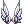
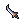
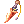

Ranger
|
| |||||||||||||||||||
|---|---|---|---|---|---|---|---|---|---|---|---|---|---|---|---|---|---|---|---|
| |||||||||||||||||||
The Ranger is the 3rd job class of Archers. Rangers are masters of traps and hunting enemies. With access to a new wolf-like mount called a Warg, they can walk fast, release traps, and thanks to the latest balance patches, get out of it and use skills such as Sharp Shooting and Arrow Storm as great AoE killers.
Player Guides
Builds
Warg/Auto Attack
A Warg build is not the best nor the strongest build available but, according to many, is a fun build that gets the job done. This build is intended to be used when the player wants to get out from the meta and play something different. Do not expect amazing results in the long turn nor to get into the end game with it but it will get you through the early-mid game and with small changes get you into a stronger build that can do the harder instances/dungeons without much hassle.
The main idea of this build is to summon your Warg using  Warg Mastery with the
Warg Mastery with the  Wolf Flute in your inventory (if you don't have one, talk with any Universal Rental NPC in any town to get one), make sure that you've
Wolf Flute in your inventory (if you don't have one, talk with any Universal Rental NPC in any town to get one), make sure that you've  Warg Strike maximized, and click at a monster to let auto-attacks from your weapon and Warg do the work.
Warg Strike maximized, and click at a monster to let auto-attacks from your weapon and Warg do the work.
Since we want more hits to attack more times and our focus in on auto-attacks, aiming for 193 and 100% CRITᴺᵒᵗᵉ ¹ with high values of LUK benefit our damage in the long run since each 3 points of LUK increase the chance of Auto-Warg Strike by 1%.
This build is NOT limited to bow.
Warg/Auto Attack Stat Build
- STR : 1-120
- AGI : 90-120
- VIT : 100 TOTAL
- INT : 1
- DEX : 1-120
- LUK : 100+
- STR and DEX depend on the type of build being used.
- Dagger+Shield asks for STR, Bow asks for DEX.
Trapper
Trapper builds are usually for:
- PvP (with
 Cluster Bomb as the main damage skill)
Cluster Bomb as the main damage skill) - Early levels if a player wants to play solo or with friends without great investment in gear
While one can make a decent build focused on traps at 100% using:
 [Bio 5] Cecil Damon Card and
[Bio 5] Cecil Damon Card and  Old Camouflage Rabbit Hood [1] to boost Cluster Bomb
Old Camouflage Rabbit Hood [1] to boost Cluster Bomb Autumn Headband [1] or the Event version
Autumn Headband [1] or the Event version  Autumn Headband [EVT] [1](you can get it with Weekly coins from Weekly Quests) to boost
Autumn Headband [EVT] [1](you can get it with Weekly coins from Weekly Quests) to boost  Ice Trap and
Ice Trap and  Fire Trap
Fire Trap
it's usually not worth outside of those two places.
The main focus of a Trapper build is INT, DEX, and ATTACK since those three boost the traps' damage and is usually used while on a warg and/or with a shield and dagger to boost survivability.
Trapper Stat Build
- STR : 1-100
- AGI : 1-90
- VIT : 100 TOTAL at least
- INT : 100-120
- DEX : 100-120
- LUK : 1-60
- STR is mostly to carry traps, you don't really need that much since most of trapper damage comes from ATK, DEX and INT.
- LUK is there if you want to add a bit of extra ATK.
Arrow Storm
An  Arrow Storm build is typically the beginner build for any Ranger. Although it's mainly used to farm until one can get better gears for a
Arrow Storm build is typically the beginner build for any Ranger. Although it's mainly used to farm until one can get better gears for a  Sharp Shooting build, it's also used in PvP due to its massive range compared to other ranged skills available on the Ranger Skill Tree.
Sharp Shooting build, it's also used in PvP due to its massive range compared to other ranged skills available on the Ranger Skill Tree.
Since Arrow Storm works as a burst damage skill with a decent time of cooldown, the player using a build like this should try to one-shot what is being hunted.
Focus on DEX for damage and INT for SP should be the main concern. STR to carry more items, when you want to farm a map for more time, and VIT to survive a bit more should be the secondary ones.
On PvM it's advised to use it with leech HP/SP gear to keep troubles with HP and SP away and farm for more time.
Arrow Storm Stat Build
- STR : 1-120
- AGI : 1-90
- VIT : 1-100
- INT : 90-120
- DEX : 120-125
- LUK : 1-60
- STR depends on what you expect from this. 120 STR is mainly used for farming purposes.
- AGI isn't really needed since the skill has CD (cooldown) but some players enjoy having decent ASPD to finish things while on CD.
- VIT is mostly to give you more HP and/or prevent STUN.
- INT for more SP/SP Regen since this is mostly a farming build.
- LUK is here just in case you want more HIT or a bit of extra ATK.
Sharp Shooting
Sharp Shooting is currently the most optimal build for a Ranger in terms of Damage Per Second(a.k.a. DPS).
Since the skill is ranged and can do critical hits (special condition of this skill), this skill can be boosted through more ways than most of other skills.
Things to know about Sharp Shooting:
- has 0.5 seconds of fixed cast time
- has 0.5 seconds of delay (this means that we need -72% delay reduction from gears/skills to be able to cast it 7 times per second at 193 ASPD)
- Has a base critical rate of +50 CRIT (This is always added to your attack, but does not show in the status window)
With this in mind, the focus is:
- a way to remove the fixed cast time such as
 Temporal Boots Of Dexterity [1] or the newest
Temporal Boots Of Dexterity [1] or the newest  Illusion Leg A-type [1] with
Illusion Leg A-type [1] with  Modification Module (Fixed Casting)
Modification Module (Fixed Casting) - maximize CRIT to get 100% CRITᴺᵒᵗᵉ ¹ and do the maximum damage possible
- 193 ASPD and gears/bragi to reduce the delay to spam the skill at the maximum rate possible
- balance increase ranged damage gears with increase critical damage gears (40% of a single one is inferior to an increase of 20% in both)
- high values of DEX/INT to get insta-cast or close (You need DEX*2 + INT = 530 to achieve insta-cast)
Sharpshooting Stat Build
- Solo (Without Wanderer/Minstrel/Arch Bishop Buff)
- STR : 1-90
- AGI : 90-120
- VIT : 30-90
- INT : 60-120
- DEX : 120-125
- LUK : 60-120
- Party Play (With Wanderer/Minstrel/Arch Bishop Buff)
- STR : 1-90
- AGI : 30-70
- VIT : 30-90
- INT : 100-120
- DEX : 120-125
- LUK : 60-120
- When in a party try to get insta-cast, or close to, with all the buffs (DEX*2 + INT = 530) while maintaining 193 ASPD, but this advice may varies to a lot of different factors you actually experience. Some players benefit from "near to instant-cast" more than Insta-Cast, because Insta-Cast might introduce lower skill spam rate for the majority of players.
Stats
| Stat | Notes |
|---|---|
| Strength | Not too important for common Ranger builds, but it is used as a main damage stat for melee auto Warg builds.
Every 1 point;
|
| Agility | Important skill since it adds ASPD for spamming Sharp Shooting, it also reduces the animation delay of various skills.
Every 1 point;
Every 5 points;
|
| Vitality | You will want some VIT to increase your HP since Ranger's tend to be a little on the squishy side.
Every 1 point;
Every 2 points;
Every 5 points;
|
| Intelligence | INT is useful for increasing your SP pool especially for spamming Sharp Shooting, also reduces variable cast time for Arrow Storm and Sharp Shooting.
Every 1 point;
|
| Dexterity | This is the primary damage stat when using bows, it also help reduce the variable cast time of Arrow Storm and Sharp Shooting.
Every 1 point;
Every 5 points;
|
| Luck | Increases your critical rate, this is needed for autoattack critical and Sharp Shooting builds
Every 1 point;
Every 3 points;
Every 5 points;
Every 10 points;
|
Skills
Archer
| Skill | Type | Properties | Description |
|---|---|---|---|
 Owl's Eye Owl's Eye
|
Passive |
|
Increase your dexterity stat.
|
 Double Strafe Double Strafe
|
Damage |
|
Use a single arrow to strike and enemy twice from a distance.
|
 Vulture's Eye Vulture's Eye
|
Passive |
|
Sharpen your sight increasing your range and Hit rate with Bow class weapons.
|
 Arrow Shower Arrow Shower
|
Damage |
|
Fire an arrow to deal physical damage to enemies within a 3x3 area at the targeted cell. In addition, the affected target is knocked back 2 cells.
|
 Attention Concentrate Attention Concentrate
|
Support |
|
Temporarily increase DEX and AGI.
In addition, it reveals hidden targets within 3x3 cells around you when cast.
|
 Arrow Crafting Arrow Crafting
|
Support |
|
Let's you turn normal items into arrows.
|
 Charge Arrow Charge Arrow
|
Damage |
|
Hit a single target for 150% ATK, and knock them back 6 cells. |
Hunter
| Skill | Type | Properties | Description |
|---|---|---|---|
 Skid Trap Skid Trap
|
Support |
|
Set a trap on the ground that slides the target in the specified direction when stepped on.
|
 Land Mine Land Mine
|
Damage |
|
Set a trap on the ground that explodes when stepped on.
|
 Beast Bane Beast Bane
|
Passive |
|
Increase your damage against Animal and Insect race monsters
|
 Beast Strafing Beast Strafing
|
Damage |
|
Use your strength to shoot a powerful arrow after using Double Strafe.
|
 Ankle Snare Ankle Snare
|
Support |
|
Set a trap on the ground that immobilizes anyone that steps in a 3x3 area of the trap.
|
 Flasher Flasher
|
Support |
|
Set a trap on the ground that blinds anyone that steps in a 3x3 area of the trap.
|
| Remove Trap | Support |
|
Removes a trap from the ground. You will receive the trap item back. |
| Falconry Mastery | Passive |
|
Allows you to rent a Falcon from Universal Rental NPC. This is needed for Falcon related skills. |
 Shockwave Trap Shockwave Trap
|
Support |
|
Set a trap on the ground that drains the SP from anyone that steps in a 3x3 area of the trap.
|
| Sandman | Support |
|
Set a trap on the ground that puts anyone that steps in a 3x3 area of the trap to sleep.
|
 Freezing Trap Freezing Trap
|
Damage |
|
Set a trap on the ground that freezes anyone that steps in a 3x3 area of the trap. It will also deal Water property physical damage to all enemies in the area.
|
 Blitz Beat Blitz Beat
|
Damage |
|
Use your Falcon to attack a target and a any enemies in the area of 3x3 cells around it.
|
 Detect Detect
|
Support |
|
Send your Falcon to a location and detect any traps or hidden enemies nearby.
|
 Spring Trap Spring Trap
|
Support |
|
Send your Falcon to a trap and set it off immediately.
|
 Blast Mine Blast Mine
|
Damage |
|
Set a trap on the ground that explodes after a set time, dealing damage to anyone within a 3x3 area of the trap.
|
 Talkie Box Talkie Box
|
Support |
|
Set a trap on the ground that displays a set message above any target that steps on it.
|
 Steel Crow Steel Crow
|
Passive |
|
Increases your Falcon's damage.
|
 Claymore Trap Claymore Trap
|
Damage |
|
Set a trap on the ground that explodes when stepped on, dealing damage to anyone within a 3x3 area of the trap.
|
 Phantasmic Arrow Phantasmic Arrow
|
Damage |
|
Shoot an imaginary arrow at a target dealing 500% ATK.
|

Sniper
| Skill | Type | Properties | Description |
|---|---|---|---|
| True Sight | Support |
|
Increase all of your stats, Hit rate, damage, and Critical Rate.
|
 Falcon Assault Falcon Assault
|
Damage |
|
Command your Falcon to strike a target.
|
| Sharp Shooting
|
Damage |
|
Strike an enemy with a powerful arrow, dealing damage to any other enemy within a 5x5 cells area around the target.
|
 Wind Walk Wind Walk
|
Support |
|
Embrace the winds and buff you and your party members with Movement Speed and Flee.
|
Ranger
| Skill | Type | Properties | Description |
|---|---|---|---|
 Ranger Main Ranger Main
|
Passive |
|
Increase your Mastery ATK and Soft Defense against Fish, Animal, and Plant race monsters.
|
 Aimed Bolt Aimed Bolt
|
Damage |
|
Shoot a volley of arrows at a target, dealing 5 hits.
|
 Electric Shocker Electric Shocker
|
Support |
|
Set a trap on the ground that will immobilize and drain SP from the target and any enemies in a 5x5 area around the target when stepped on.
|
| Warg Mastery
|
Support |
|
Allows you to call a Warg to your side, using this skill again will return the Warg to the wild.
|
 Trap Research Trap Research
|
Passive |
|
Study the art of trapping, increasing the Damage and Range of your traps. Also increases your Max SP.
|
| Arrow Storm
|
Damage |
|
Call down a hail of arrows on a wide area around a target.
|
| Cluster Bomb
|
Damage |
|
Set a trap on the ground that can be manually detonated with  Detonator, dealing a large amount of damage to all enemies in a 7x7 area of effect. Detonator, dealing a large amount of damage to all enemies in a 7x7 area of effect.
|
 Warg Rider Warg Rider
|
Support |
|
Allows you to mount your Warg companion.
|
 Tooth of Warg Tooth of Warg
|
Passive |
|
Increases damage done by Warg skills.
|
 Camouflage Camouflage
|
Support |
|
Hide yourself near a wall or obstacle, you will still be detected by Demon race and Boss monsters.
|
 Magenta Trap Magenta Trap
|
Support |
|
Set a trap on the ground that when stepped on turns all enemies in a 5x5 area into the Fire property.
|
 Cobalt Trap Cobalt Trap
|
Support |
|
Set a trap on the ground that when stepped on turns all enemies in a 5x5 area into the Water property.
|
 Maze Trap Maze Trap
|
Support |
|
Set a trap on the ground that when stepped on turns all enemies in a 5x5 area into the Earth property.
|
| Verdure Trap | Support |
|
Set a trap on the ground that when stepped on turns all enemies in a 5x5 area into the Wind property.
|
 Fear Breeze Fear Breeze
|
Support |
|
When active during normal attacks, has a chance to do additional attacks.
|
| Detonator
|
Support |
|
Sets off any traps within a 7x7 area of effect. |
| Warg Dash | Damage |
|
Dash in a straight line very fast. You will stop if you run into a wall or enemy.
|
| Warg Strike
|
Damage |
|
Command your Warg to strike a target with immense force. Your Warg will automatically attack while you do normal attacks.
|
| Sensitive Keen | Damage |
|
Command your Warg to search the area for hidden traps and enemies. If Warg finds an enemy, it will attack it, and has a chance to auto cast  Warg Bite on the target. Warg Bite on the target.
|
| Warg Bite
|
Damage |
|
Command your Warg to bite an enemy and attempt to lock them in place for a few seconds.
|
| Firing Trap
|
Damage |
|
Set a trap on the ground that explodes in a 5x5 area of effect when stepped on.
|
| Ice Bound Trap
|
Damage |
|
Set a trap on the ground that explodes in a 5x5 area of effect when stepped on.
|
 Unlimit Unlimit
|
Support |
|
Call upon the god of hunting and archery to bestow their power upon you, increasing your ranged damage by a massive amount for 150 seconds.
|


Equipment
Headgear
Upper Headgear
| Item | Way to Obtain | Notes |
|---|---|---|
 Rideword hat [1] Rideword hat [1]
|
Cash Shop, Custom Headgear Quests |
Great farming headgear and starting upper headgear. The chance to get HP/SP stacks with other items with similar effects so pairing it with something like, for example, Thanatos Bow [1] and |
 Ship Captain Hat [1] Ship Captain Hat [1]
|
Cash Shop |
Not the best or the worse but a fine starting option. |
| Illusion Apple of Archer [1] | Illusion of Moonlight |
Ignore its existence unless you're planning to use Illusion Ballista [2] since it doesn't provide much outside of that combo. Can be enchanted - Illusion Enchants |
 Ancient Gold Ornament [1] Ancient Gold Ornament [1]
|
Biolab Gear |
Very decent option if you can find one cheap on the market until you get something better. Can be enchanted - Biolab Gear |
 Fancy Feather[GC] [1] Fancy Feather[GC] [1]
|
Gold Coins |
Strong headgear that starts to shine as soon as you get it to +7. Currently the best option to use in most builds until you get the Bio5 Hat. Can be paired with: to boost the damage of a |
 Fancy Feather[EVT] [1] Fancy Feather[EVT] [1]
|
Endeavor Tokens |
Free version of |
| Evil Marching Hat [1] | Cash Shop |
At +9 since it's better than a +7 |
| Old Camouflage Rabbit Hood [1]
|
Tomb of the Fallen (Bio 5) |
The best of the best for almost all builds when enchanted with the right special enchants. Do not invest into this unless you've a shit ton of zenny to spent (something like 300M+) or lots of time to spend in the dungeon. Getting the correct special enchant is 100% RNG and it may take ages to some. Can be enchanted - Tomb of the Fallen (Bio 5) |
Mid Headgear
| Item | Way to Obtain | Notes |
|---|---|---|
|  Sigrun's Wing | Cash Shop |
Decent starting mid headgear thanks to the 2% extra ranged dmg that it offers to the Ranger class. If your build benefits from critical damage, it can now be used along Can be paired with:
|
 Angel Spirit Angel Spirit
|
Cash Shop |
+2% ATK/MATK, +2 STR Good pure offensive option. |
 Monocle [1] Monocle [1]
|
Owl Marquees, Owl Viscount |
In case you need something "cheap" with a slot. |
 New Wave Sunglasses New Wave Sunglasses
|
Custom Headgear Quests |
-10% aftercast delay, the best option if you need -% delay. |
 New Wave Sunglasses [1] New Wave Sunglasses [1]
|
Headgear Awakening |
-5% aftercast delay contrary to the -10% that the non-slotted option offers but adds a slot in case the players wants to use something in this slot. Good in some specific occasions with specific cards. If you do the quest and account bound the item, you get access to free decards for it. |
 Fafnir Skin Fafnir Skin
|
Custom Headgear Quests |
+3 CRIT in case you need a bit more CRIT. Can be paired with:
|
 Magical Booster [1] Magical Booster [1]
|
Magical Booster |
Can be enchanted - Magical Booster Adds nothing on its own but can be enchanted with a bunch of different options making it a valuable item in some builds and even awakened for extra bonus with Can be paired with:
|
 Crimson Magical Booster [1] Crimson Magical Booster [1]
|
Headgear Awakening |
Awakened version of Depending on the enchants passed it can be a valuable option to have in many builds and even more if you benefit from the extra bonus it gives with Can be paired with:
|
 Dark Blinder [0] / [1] Dark Blinder [0] / [1]
|
RSX-0806 for the [0] version, Spiritual Auger to add a slot to the [0] version |
Alone it doesn't offer much but when paired with Can be paired with:
|
Lower Headgear
| Item | Way to Obtain | Notes |
|---|---|---|
 CD in Mouth CD in Mouth
|
Cash Shop |
Good low headgear for some auto-cast dependent builds in case you want to activate buffs/auto-cast skills faster, like |
 Rosary in Mouth Rosary in Mouth
|
Rosary in Mouth's Quest |
Good and not super hard to make low headgear. It's even a solid lower option in the low headgear slot in the end game. |
 Magical Rosary in Mouth Magical Rosary in Mouth
|
Headgear Awakening Quest |
Best option if you need extra stats or Perfect Dodge for some reason - INSTA-CAST, +1 ASPD, +1 CRIT, 100 PD build, etc. |
 Fafnir Mask Fafnir Mask
|
Custom Headgear Quests |
+2 CRIT in case you need that extra CRIT to achieved the desirable value in a build. Can be paired with:
|
 Samurai Mask Samurai Mask
|
Cash Shop | When you already have a decent value of critical damage and/or ranged dmg and want to boost your damage a bit further, this is a great way to do it. |
 Scarlet Rose Scarlet Rose
|
Gold Coins | When you already have a decent value of critical damage and/or ranged dmg and want to boost your damage a bit further, this is a great way to do it. |
 Vicious Mind Aura Vicious Mind Aura
|
Bioresearch Laboratory |
Very rare item that is only great with Can be paired with:
|

Armor
| Item | Way to Obtain | Notes |
|---|---|---|
 White Wing Suit [1] White Wing Suit [1]
|
Anubis, Mora |
It's part of the White Wing Set and a great, plus cheap, way to start in the server with an One of the best armors for an It's not advised to farm them but instead get 10 Can be enchanted - Mora |
| Sniping Suit [1] | Bow Master |
Great overall cheap starting armor. While its stats may look weak to some users, the -% delay makes builds that depend on -% delay gears to get an increase on the overall damage per second (DPS), like |
 Lava Leather Suit [1] Lava Leather Suit [1]
|
Magma Dungeon F3 |
Decent armor at +7 until the player can afford the better option - Don't waste money on a +9, a +7 |
 Illusion Armor A-type [1] Illusion Armor A-type [1]
|
Episode 17.1 - Illusion |
Best armor at the moment mostly due to the enchants that cover all the needs a ranger has on his builds. Can be enchanted - Episode 17.1 - Illusion Contrary to what one could think |


Weapon
Bow
Arrow Storm
| Item | Way to Obtain | Notes |
|---|---|---|
 Virtual Bow-OS [2] Virtual Bow-OS [2]
|
Illusion Equipments and Enchants (17.1) |
Strong bow for Arrow Storm. Can be enchanted - Episode 17.1 - Illusion |
| Illusion Ballista [2] | Illusion of Vampire |
Strong bow for Arrow Storm when used with Illusion Apple of Archer [1]. Can be enchanted - Illusion Enchants |
| Big CrossBow [2] | Biolab Gear Exchange, Cecil Damon |
A strong bow for Arrow Storm if refined above +10. Can be enchanted - Biolab Gear Enchants |
| Falken Shooter [2] | Bioresearch Laboratory |
It's designed to be a great weapon for Can be enchanted - EDDA Biolab Enchants |
Generic/Other Builds
| Item | Way to Obtain | Notes |
|---|---|---|
 Hunter Bow [0] Hunter Bow [0]
|
Buy it at Payon Tool Dealer:
|
If you're looking for a starting bow, the next in the chain of gears after Eden gears, and don't want to get a Thanatos Bow [1] yet, this is the bow to aim. It's cheap and can be paired with |
 Bow of Storms [1] Bow of Storms [1]
|
Nightmarish Jitterbug, Dreams and Shadows | Very decent and cheap starting bow for damage until you get something better.
Can be enchanted - Dreams and Shadows |
| Thanatos Bow [1] | Ghost Palace | Can be paired with an  Hunter Fly Card and become a great farming bow due to the HP and SP leech capabilities. Hunter Fly Card and become a great farming bow due to the HP and SP leech capabilities.
Can be enchanted - Ghost Palace |
| Elven Bow [1] | Gargoyle | Decent starting bow that is a pain in the ass to be farmed.
Ignore it unless you can find one cheap in the market or Gramps has Gargoyle as one of the monsters. |
 Crimson Bow [2] Crimson Bow [2]
|
Bow Master, Owl Baron, and Kavach Icarus |
Mostly a mid-tier/transition to something better weapon since there are better options now. Only shows its full power at +15. |
 Gigantic Bow [1] Gigantic Bow [1]
|
Nightmarish Jitterbug, Dreams and Shadows |
Decent starting and also good end game option (asks for a high level of refine and right enchants) due to its natural +40% Ranged Damage and Weapon Level 4. It's often ignored due to its -15% ASPD, even if it's not an issue with current gear and level available, and for not the easiest thing to get in bulk to refine and re-roll enchants (drop rate is low to get it at a decent rate). Can be enchanted - Dreams and Shadows |
 Vicious Mind Bow [1] Vicious Mind Bow [1]
|
Sky Fortress |
Only really starts to shine at +10 and above and his full potential is only unlocked at +15 with the right enchants. A +4 with ranged dmg is also an okay cheap starting weapon if you rush levels first and worry about gears later. Comes pre-enchanted with three different enchants and enchants can be changed through a NPC - Re-Rolling Vicious Enchants |
| Illusion Hunter Bow [2] | Illusion of Luanda | Good bow available for most builds when used together with  Hunting Arrows. Hunting Arrows.
Since its damage is forced neutral due to the forced use of Can be enchanted - Illusion Enchants |
 Sharp Star [2] Sharp Star [2]
|
Bioresearch Laboratory | It's a bow made for Sharp Shooting but unless you have the budget to get the  Cecil's Memory, you're better with other options since without it a +15 Sharp Star [2] is very similar in damage to a +15 Vicious Mind Bow [1]. Cecil's Memory, you're better with other options since without it a +15 Sharp Star [2] is very similar in damage to a +15 Vicious Mind Bow [1].
Can be enchanted - EDDA Biolab Enchants |
 Aiming Bow [2] Aiming Bow [2]
|
Bioresearch Laboratory | Currently the only viable bow for any Aimed Bolt build due the reduction of cooldown offered by this bow.
It's also not terrible for other builds that benefit from the -delay it offers such as Can be enchanted - EDDA Biolab Enchants |
| Bolt Shooter [2] | Einbech Dungeon 3 | Looks like a good bow for a Aimed Bolt build but since it doesn't offer any cooldown reduction to the skill like Aiming Bow [2], it's actually a bad option for that. It's still a good bow for other builds due to the bonus offered.
Can be enchanted - Einbech Dungeon 3 Enchants |


Dagger
| Item | Way to Obtain | Notes |
|---|---|---|
|  Main Gauche [4] | Hornet |
Okay option due to slots. Gives flexibility between offensive and defensive card options. |
 Thanatos Dagger [1] Thanatos Dagger [1]
|
Ghost Palace | Can be paired with an Hunter Fly Card and become a great farming dagger in some builds due to the HP and SP leech capabilities.
Can be enchanted - Ghost Palace |
 Fortune Sword Fortune Sword
|
Phreeoni, Infinite Phreeoni, Wickebine Tres |
Decent defensive option due to its +20 PD and +5 LUK. Can be enchanted - Malangdo Enchant |
|  Crimson Dagger [2] | Pasana, Sleeper, Porcellio, Siorava, Desert Wolf, Wickebine Tres, Skeleton General |
Decent dagger due to to its slots and equip attack value. |
| Faceworm Queen's Leg [2] | Faceworm's Nest |
Strong dagger for a trapper due to its slots, weapon attack value, INT, and weapon level. Don't focus on the damage of EQ (Earthquake) |
 Scalpel [3] Scalpel [3]
|
Piranha, Vanberk, Banshee, Byorgue |
Currently the best dagger for Also a strong option for other dagger builds due to to its slots, weapon level and weapon attack value. |
Shields
| Item | Way to Obtain | Notes |
|---|---|---|
 Knight's Shield [1] Knight's Shield [1]
|
Cash Shop |
One of the best balanced shields in terms of offensive and defensive stats. Can be enchanted - Cursed Knight's Shield |
 Cursed Knight's Shield [1] Cursed Knight's Shield [1]
|
Endeavor Tokens |
Free version of Knight's Shield. Due to that it can't be traded nor sold to other players. Obtained by doing Weekly and Daily Quests and trading the Endeavor Tokens at the Master of Coins NPC. Can be enchanted - Cursed Knight's Shield |
 Purified Knight's Shield [1] Purified Knight's Shield [1]
|
Cursed Knight's Shield |
Upgraded version of the Can be enchanted - Cursed Knight's Shield |
 Mad Bunny [1] Mad Bunny [1]
|
Cash Shop |
A great pure offensive shield. At +12 it also gives a decent boost in CRIT. |
| Mad Bunny[EVT] [1] | Endeavor Tokens |
Free version of Mad Bunny Shield. Due to that it can't be traded nor sold to other players. Obtained by doing Weekly and Daily Quests and trading the Endeavor Tokens at the Master of Coins NPC. |
 Immune Shield [1] Immune Shield [1]
|
Battlegrounds, Monster Hunter - Low Rank Hunts |
Great defensive option against neutral damage. At +9 becomes a decent option overall. Excels at +11-12 where with other gears with similar effect (-% neutral dmg) lets you play a -100% neutral build. |
 Valkyrja's Shield [1] Valkyrja's Shield [1]
|
Valkyrie |
Great defensive option against some elemental damage. This is mostly a PvP shield at the moment although still useful in PvM. |
Garment
| Item | Way to Obtain | Notes |
|---|---|---|
 White Wing Manteau White Wing Manteau
|
Mora |
Cheap starting option although it's only 100% good if you use the complete White Wing Set and only for an Always check if it's cheaper to buy them from players or to get 10 Can be enchanted - Mora |
 Heroic Backpack [1] Heroic Backpack [1]
|
Battlegrounds, Monster Hunter - Low Rank Hunts, Gold Coins |
Good starter/mid game option for most builds if you can get one for cheap or farm for it. It only excels at +7/+9 so always think first before spending your zenny and time on +0. |
 Nidhoggur's Shadow Garb [1] Nidhoggur's Shadow Garb [1]
|
Nidhoggur's Nest |
Can be paired with: to boost the damage of a |
 Fallen Angel Wings [1] Fallen Angel Wings [1]
|
Monster Hunter 2 |
Can be enchanted - Monster Hunter 2 Great option valid even in the end game for some builds if you need more damage and can sacrifice the slot for it. |
 King Schmidt's Manteau [1] King Schmidt's Manteau [1]
|
Fall of Glast Heim |
Can be enchanted - Fall of Glast Heim It can end being the best option for builds that want Ranged Damage in this slot but thanks to the heavy RNG that exists with the enchants, most of the time it isn't worth the trouble to get it. It's still here because if you're lucky enough, it's a really good option. It can also end being a cheaper alternative to |
 Illusion Engine Wing A-type [1] Illusion Engine Wing A-type [1]
|
Episode 17.1 - Illusion |
Can be enchanted - Episode 17.1 - Illusion Enchants make this a viable option for many builds in the end game. Can be paired with:
|
 Illusion Engine Wing B-type [1] Illusion Engine Wing B-type [1]
|
Episode 17.1 - Illusion |
Can be enchanted - Episode 17.1 - Illusion Enchants make this a viable option for many builds in the end game. Can be paired with:
|
 Fallen Warrior Manteau Fallen Warrior Manteau
|
Tomb of the Fallen |
Alone it's pretty much a better Can be paired with:
|
 Violet Halo Violet Halo
|
Monster Hunter |
Strong option for a bunch of builds when paired with the right headgear. Can be paired with:
|
Footgear
| Item | Way to Obtain | Notes | ||||||||||||||||||
|---|---|---|---|---|---|---|---|---|---|---|---|---|---|---|---|---|---|---|---|---|
 White Wing Boots [1] White Wing Boots [1]
|
Mora |
Cheap starting option although it's only 100% good if you use the complete White Wing Set and only for an Always check if it's cheaper to buy them from players or to get 10 Can be enchanted - Mora | ||||||||||||||||||
 Temporal Boots of Dexterity [0]/[1] Temporal Boots of Dexterity [0]/[1]
|
Temporal Boots |
If you're looking to play something like Sharp Shooting or Trapper, the version without slot is perfectly fine for someone who has started recently while the slotted version is better later. The -0.5 fixed cast time with 120 BASE DEX will help you a ton to have a better cast to use skills. For most builds the best enchants are Since Be aware that for a Warg build you will be better with Can be enchanted - Temporal Boots Special Enchants can be paired with Insignias with the right Special Enchants for a further bonus:
| ||||||||||||||||||
| Illusion Leg A-type [1]
|
Episode 17.1 - Illusion |
Excels at +7 and a great option to any ranger with low investment due to the bonus provided by itself (+5% Ranged Damage) and the enchant Since it can be further improved with Legendary Enchants, there is space for stronger boosts at a cheaper cost. Be aware that, for most builds, while Can be enchanted - Episode 17.1 - Illusion Can be paired with:
|


Accessory
| Item | Way to Obtain | Notes |
|---|---|---|
 Sheriff's Left Badge [1] Sheriff's Left Badge [1]
|
Fistful of Zeny Quest |
Great starting item that can be obtained for free. If you're new into the server, do the quest at level 100 to get a decent amount of experience while doing it. |
 Sound Amplifier [1] Sound Amplifier [1]
|
Creamy-fear |
If you're new, or simply find your cast slow, this is a great option to reduce it. |
 Physical Enhancer Ring [1] Physical Enhancer Ring [1]
|
Geffen Magic Tourmanent |
Can be enchanted - Geffen Magic Tourmanent Decent accessory for most builds with the right enchants until you can afford something better. Because Illusion Boosters are now available (check below), it has become a cheap option to get outside of the ones with perfect enchants. |
| Episode 17.1 - Illusion |
Can be enchanted - Episode 17.1 - Illusion Because of the enchant options available, it's a great option available for almost all builds. For example, for something like | |
|
|
Fall of Glast Heim |
Can be enchanted - Fall of Glast Heim Insignias are expensive but currently the best to get for the left accessory slot with the right enchants. There isn't currently a best to get nor the best enchant since it depends a lot on what you want to build and your current gear. Just remember that if you're going for |


Cards
Headgear
| Item | Way to Obtain | Notes |
|---|---|---|
 Essence of Evil DEX 3 Essence of Evil DEX 3
|
Temple of the Demon God | Generic option to help with cast and get some extra dmg while achieving that. |
 Essence of Evil STR 3 Essence of Evil STR 3
|
Temple of the Demon God | Generic option to increase final damage by boosting ATK.
Yes, it's better than a |
 Furious Hero Furious Hero
|
Illusion of Moonlight | Depending on your gears, this may be a better option to increase your damage compared to other options based on +%ATK. |
 Purple Ferus Purple Ferus
|
Abyss Dungeon 4 | An improved version of Furious Hero at the cost of HP and refine rate.
|
 Deep Sea King Dramoh Card Deep Sea King Dramoh Card
|
Illusion of Underwater | An inferior version of the Purple Ferus but when paired with other cards, has the potential to give really good bonus and become a better option for some builds.
Can be paired with:
|
 King Dramoh King Dramoh
|
King Dramoh | On its own, this is not a great card. STR barely provides extra damage for most Ranger builds, and this amount is almost the same as zero, so it's not enough to sacrifice a slot for this card.
But if you need a decent boost of HP, since Ranger is very fragile, you've here a good option when you use it with Can be paired with:
|
 Essence of Evil LUK 3 Essence of Evil LUK 3
|
Temple of the Demon God | Cheap option to get CRIT by increasing CRIT and LUK at the cost of DEX. |
 Phylla Phylla
|
Phylla | Beginner option to get some extra CRIT and AGI/DEX that may be the needed boost to give you that extra point in ASPD and help you reach 193 ASPD. |
 Engkanto Engkanto
|
Engkanto |
Specific card against Poison and Plant monsters. Great card for players that do Faceworm and Bio5 all the time, for example. |
 Angra Mantis Angra Mantis
|
Great card to get an increase of critical damage. Can be paired with:
|
Armor
| Item | Way to Obtain | Notes |
|---|---|---|
 Resentful Bongun Card Resentful Bongun Card
|
Illusion of Moonlight | Cheap option if you just want ATK in this slot. |
 Porcellio Porcellio
|
Porcellio | The easy to get option for players that want more ATK in this slot and started not long ago.
Can be paired with:
|
 Restless Dead Restless Dead
|
Illusion of Vampire | A better version of Porcellio in terms of utility since it prevents your weapon and armor to break. It's also equally easy to get.
|
 Hardworking Pitman Card Hardworking Pitman Card
|
Illusion of Teddy Bear | If you need +%ATK and/or HIT, this is the card to get. |
 Contaminated Raydric Contaminated Raydric
|
Abyss Glast Heim | Another option to get +%ATK in this slot.
Can be paired with:
|
 Furious Ninetail Furious Ninetail
|
Illusion of Moonlight | The card to get if you need CRIT and/or CRIT DMG. |
Weapon
| Item | Way to Obtain | Notes |
|---|---|---|
| Hunter Fly
|
Hunter Fly | Probably the card of election to use while farming since it can be used with gear of similar effect and keep your char always on full HP or close to because it gives you a chance that your attacks heal you based on the damage you give.
Also useful in trap builds since it works with them. |
 Archer Skeleton Archer Skeleton
|
Archer Skeleton | A good and very easy to get damage card for builds that do ranged damage. |
 Resentful Archer Skeleton Resentful Archer Skeleton
|
Resentful Archer Skeleton | Cheap starting option for ranged dmg if you've a +10 or above bow. |
 White Knight White Knight
|
Old Glast Heim | Great overall option against medium and large size monsters.
If you're playing a build that makes use of a shield, the combo gives a really nice boost in damage. Can be paired with:
|
 Contaminated Wanderer Contaminated Wanderer
|
Abyss Glast Heim | Best option against medium and large size monsters. |
 Abysmal Knight Abysmal Knight
|
Due to how mods work, if you're using a weapon with more than a slot and most of the time you kill MVPs and/or mini-bosses, this is a great option since it may give you more dmg than a second equal card.
You've to do math to see if this is worth on your setup, don't blindly add it just because it appears here. |
Shield
| Item | Way to Obtain | Notes |
|---|---|---|
 Mysteltainn Mysteltainn
|
Mysteltainn | Good option against small size monsters. |
 Ogretooth Ogretooth
|
Ogretooth | Good option against medium size monsters. |
 Executioner Executioner
|
Executioner | Good option against large size monsters. |
 Hodremlin Hodremlin
|
Hodremlin | Okay overall option with a very nice effect of +30 Perfect Dodge when you get hit by any type of damage. |
 Khalitzburg Knight Khalitzburg Knight
|
Old Glast Heim | Great overall reduction card against medium/large monsters.
Can be paired with:
|
 Alice Alice
|
Alice | The best shield card to use against bosses. Just be careful against non-bosses since this card boosts the damage you get by a lot. |
 Gaster Gaster
|
Gaster | Pretty much the opposite of Alice but at the same time also weaker. You get less dmg against non-boss monsters and extra damage from boss monsters.
|
Garment
| Item | Way to Obtain | Notes |
|---|---|---|
 Raydric Raydric
|
Raydric | Defensive option against neutral damage that may help in some builds and/or occasions.
Can be paired with:
|
 Wakwak Wakwak
|
Wakwak | The card to get for specific builds that need ATK to boost final damage, such as trappers, but can't sacrifice enough points to get 120 Base STR to use  Brown Rat. Brown Rat.
|
| Brown Rat
|
Brown Rat | The best card to get for specific builds that need ATK to boost final damage, such as trappers, at the cost of 120 Base STR. If you can't have 120 Base STR, use a Wakwak.
It also gives a great boost in ASPD. |
 Petal Petal
|
Petal | The card to get in this slot if you need Critical Damage. |
 Menblatt Menblatt
|
Menblatt | Great option if you need Ranged Damage. |
 Ancient Stone Shooter Ancient Stone Shooter
|
Illusion of Luanda | Another option for Critical Damage and very similar to Petal but trades some of the Critical Damage at the cost of giving +%ASPD.
|
 Ancient Wootan Shooter Ancient Wootan Shooter
|
Illusion of Luanda | Since Bow Damage is the same as Ranged Damage but exclusive to bow users, it ends being a better version of Menblatt for bow users since it also gives ASPD and ATK.
|
Footgear
| Item | Way to Obtain | Notes |
|---|---|---|
| Essence of Evil STR 3
|
Temple of the Demon God | Generic option to increase final damage by boosting ATK.
Yes, it's better than a |
 White Porcellio White Porcellio
|
White Porcellio | Another option if you need ATK in this slot.
Can be paired with:
|
 Deep Sea Merman Deep Sea Merman
|
Illusion of Underwater | Increases your ATK based on how much you've of STR.
Since it uses STR, that makes it a not so easy to use card for some since there isn't many space to focus on it. But if you're playing a CRIT damage based build, you will probably want to use anyway since the combo adds a lot of CRIT DAMAGE. Can be paired with:
|
 Kuro Akuma Kuro Akuma
|
Geffen Magic Tournament | The "cheap" option for players that want more ranged damage in this slot. |
 Odoric Odoric
|
Geffen Magic Tournament | Another "cheap" option for players that want more ranged damage in this slot.
It also gives you some +%ASPD. |
 Outrageous Cookie Outrageous Cookie
|
Horror Toy Factory | Increases your +%ATK at the cost of your max HP and SP.
If you've a footgear with a high level of refine, this is a great option to increase your final damage if +%ATK increases it. |
 Blut Hase Blut Hase
|
Geffen Magic Tournament | A very expensive way to boost your ranged damage and +%ATK with a single card. |
Accessory
| Item | Way to Obtain | Notes |
|---|---|---|
 Revolver Buffalo Bandit Revolver Buffalo Bandit
|
Revolver Buffalo Bandit | The card to get if you already have a decent amount of Ranged Damage and Critical Damage or your build could get some extra damage by boosting +%ATK.
Exclusive for the right accessory slot which means you can't use more than one. Can be paired with:
|
 Shotgun Buffalo Bandit Shotgun Buffalo Bandit
|
Shotgun Buffalo Bandit | Gives a decent amount of AGI and HIT. This means that it can be the card that gives you that extra value of ASPD needed to achieve 193 ASPD in some builds.
Exclusive for the left accessory slot which means you can't use more than one. Can be paired with:
|
 Ominous Heater Ominous Heater
|
Illusion of Abyss | The card to get if you need CRIT and CRIT DAMAGE. |
 Chaotic Killer Mantis Chaotic Killer Mantis
|
Illusion of Labyrinth | If you just want extra CRIT DMG, this is the card to go specially if you use the combo since together it gives a higher value when compared to the other options available.
Can be paired with:
|
 Chaotic Acolyte Chaotic Acolyte
|
Illusion of Labyrinth | If you need extra -%delay to spam some skills, this is a great option to get.
Exclusive for the left accessory slot which means you can't use more than one. |
 Faceworm Faceworm
|
Faceworm's Nest | Alone it doesn't provide much outside of a bit of extra +%ASPD but the combo gives a nice -6% delay useful in some builds.
Can be paired with:
|
 Dark Faceworm Dark Faceworm
|
Faceworm's Nest | If you need extra -%delay to spam some skills, this is a great option to get. Be aware that is a rare and usually expensive card to get.
Can be paired with:
|
Attack Speed
| Archer Branch | |||||||||
|---|---|---|---|---|---|---|---|---|---|
| Archer | |||||||||
| Base | 156 Aspd | Base | 156 Aspd | Base | 156 Aspd | ||||
 Shield Shield |
-9 | Shield |
-9 | Shield |
-8 | ||||
 Dagger Dagger |
-15 | Dagger |
-13 | Dagger |
-10 | ||||
 Bow Bow |
-10 | Bow |
-8 | Bow |
-9 | ||||
Notes
ᴺᵒᵗᵉ ¹ - 100% CRIT doesn't mean having 100 CRIT on the ALT+A. Monster have a CRIT Shield based on their LUK/5. This means that a monster with 120 LUK reduces the CRIT displayed on ALT+A by 24. It's adviced to have at least 106 to have 100% CRIT against most of the content.